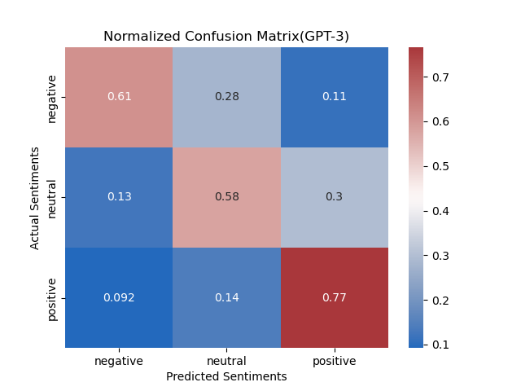
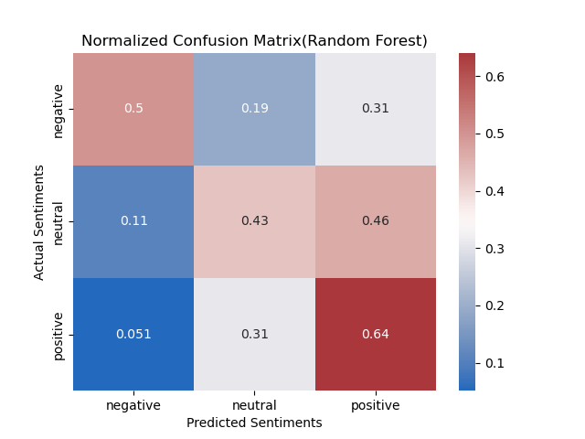

In the "Congress Tweets" project, the UCSD China Data Lab hand-scraped and scored thousands of Tweets to see how China is represented in Tweets from the U.S. Congressmembers. You can read their results here.
We utilized standard Machine Learning models from the
scikit-learn Python library to see how traditional methods work on this issue. We
found that Naive Bayes and Random Forest proved to be the
highest-performing models, but we had
issues with class imbalance that made our results a little shaky.
Annie's Q1
Code
Gokul's Q1
Code
LLMs have exploded in popularity and sophistication over the last few years with cost-affordable and high-quality models being made publicly-accessible. We chose OpenAI GPT-3 as our option due to its incredible quality and ease-of-use in Python.

GPT-3 has 4 powerful models under its hood, but davinci
was our selection due to its higher capacity for understanding specific instruction.
Furthermore, its training data ends in October 2021, nearly 2 years after every other
model choice.

Initially, both prompts started with very simplistic formats. No in-context learning was used, and fairly simplistic definitions of terms like 'relevance', 'positive', 'neutral', and 'negative' were used. Because each Tweet required its own API call to the OpenAI GPT-3 API, the prompts were run on samples of 100 Tweets at a time rather than the whole dataset.

In order to improve the results from the model, further prompt tuning was required. Both prompts pursued 'few-shot' learning, where the prompt itself provides example inputs, outputs, and reasonings. These included randomly selected Tweets as well as 'pain-point' examples that highlighted where the model consistently struggled.

To assess if GPT-3 improved classification performance from the team's results in quarter 1, we compared the GPT-3's performance in classifying Tweet relevance with the Naive Bayes Classifer from quarter 1 and compared the GPT-3's performance in evalutaing sentiment with a Random Forest Classifer.

After running through prompt engineering, sampling, and evaluating several times, the last step of the project was to communicate our findings and results with our mentors from the China Data Lab, and deciding what role GPT-3 can have in the future of the 'Congress Tweets' project.
The utilization of GPT-3 provided accuracies that fell well short of last quarter's results. Even after extensive prompt engineering, the peak accuracy achieved by the model was ~ 75%, while the Naive Bayes classifier regularly reached > 90%. Below is an example confusion matrix generated during experimentation, revealing a common weak point of the model. Specifically, Tweets that the human encoder thought were irrelevant were often considered relevant by the model.
In each training trail, GPT-3 Davinci model was applied to a sample of 100-200 Tweets.
GPT-3 achieved between 60% and 70% accuracy each trail in classifying Tweet sentiments. Shown
in the confusion matrix below, GPT-3 performed best in classifying Tweets with positive sentiment
but struggled in distinguishing neutral Tweets with positive and negative Tweets. Compared to the Random Forest Classifier,
which achieved approximately 55% accuracy, GPT-3 had higher accuracy in classifying all sentiment classes.


The application of LLMs to this particular topic generated measures that fell short of our expectations, and of our Quarter 1 results. Despite continuous engineering of the prompt, we were not able to match our original statistics in classifying relevance nor achieve high accuracy in classifying sentiment; however, the process of using an LLM like GPT-3 revealed clearly that these tools definitely have their place in this field. In conversing with the UCSD China Data Lab over the course of the last 10 weeks, our work has been helpful in determining whether they will move forward with using LLMs throughout the future stages of their Twitter analysis projects.
Looking at the overall performance of the GPT-3 language models, and even at the supervised ML pathways from earlier, it's easy to see that this is a difficult task no matter what tools we use. Human interpretation of text is so influenced by preexisting biases, contexts, and other factors that cannot be modeled, and the strange Internet-affected language of Twitter only contributes to this further. Because of LLMs' ability to comprehend text in its own context, outside the purview of 'trainign data', it is worth considering shifting away from a simple classification & sentiment analysis, and to utilize the full power of these models for deeper textual analysis.
Large Language Models are undoubtedly the future of language modeling and analysis. Their incredible power, ease-of-use, and high quality outputs put them far ahead of any other traditional NLP methodology. However, that does not mean simply tossing out what's been done before and trusting GPT-3 to always get the solution. As our project shows, GPT-3 is not always ready to bridge the gap resulting from natural differences in human interpretation and context. Subject matter expertise and domain knowledge are and will remain absolutely key to getting the best out of these models.